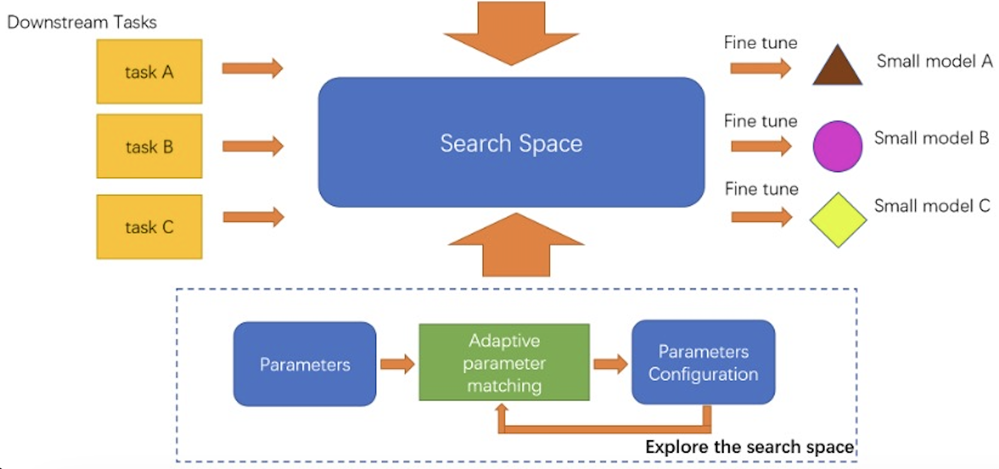

|  |
Compression and acceleration on Large-Scale Models
Nowadays, model sizes keep increasing too large to be stored on a single gas pedal;
for instance, 175 billion parameters of GPT-3 require 350Gib of main memory if stored
parameters with 16-bit. In addition, the memory required for activation, gradients,
etc. during training is at least three times the model memory requirement. When the
large-scale model (e.g., foundation model and LLM) is deployed in practice, the model
is fine-tuned to generalize to specific downstream tasks using different data
depending on the downstream tasks.
I am currently designing a SW/HW co-design framework, dedicated to optimize storage
and execution efficiency.
|